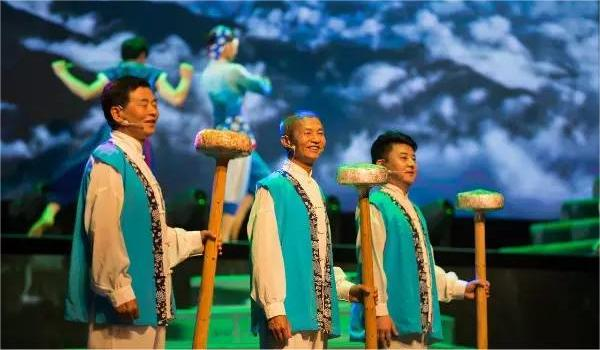
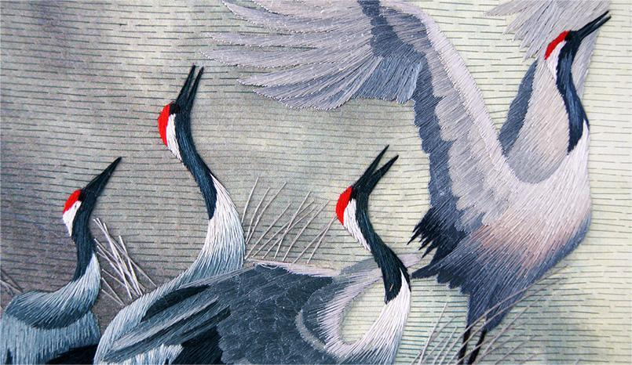
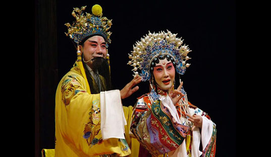
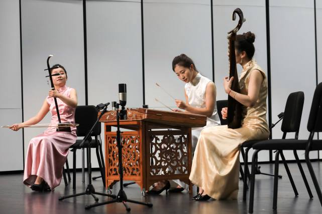

吴歌
吴歌发源于江苏东南部，苏州地区是吴歌产生发展的中心地区。吴歌是吴语方言地区下层人民的口头文学创作，主要依靠在民间的口口相传，代代相袭，
是带有浓厚民族和地方特色的韵文，吴歌的历史源远流长，《楚辞·招魂》：“吴歈蔡讴，奏大吕些”，

苏绣
苏绣技艺主要集中分布于市区与太湖之滨的镇湖。苏绣是一门古老的手工技艺。原料主要有底料和花线。工具有绷架和绷凳、绣针、搁手板。工艺流程包括设计
绣稿、勾稿、染线、上绷、钉稿、配线、刺绣、下绷、装裱等。

昆曲
昆曲被联合国教科文组织宣布为第一批人类非物质文化遗产代表作，也是第一批国家级非物质文化遗产名录项目。昆剧由四个艺术要素组成基本内容，即：歌，
舞，表演和故事。昆曲剧本文字高雅，它直承了古典诗、词、赋、赞的文学传统，在中国文学史和中国戏剧史中都具有重要地位

江南丝竹
明万历末在吴中（苏州地区）形成了新的乐种叫弦索，这种弦索乐可称是江南丝竹在苏州发展的前身。它密切结合民俗活动，后正式定名为江南丝竹。
江南丝竹在太仓有着广泛的群众基础，在传统的技法中有“你繁我简，你高我低，加花变奏，嵌挡让路，即兴发挥”等手法，这种技法包涵了人与人之间的相互谦让、
协调创新等深刻内涵。
 苏州非物质文化遗产
苏州非物质文化遗产